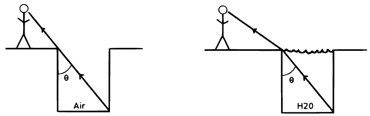
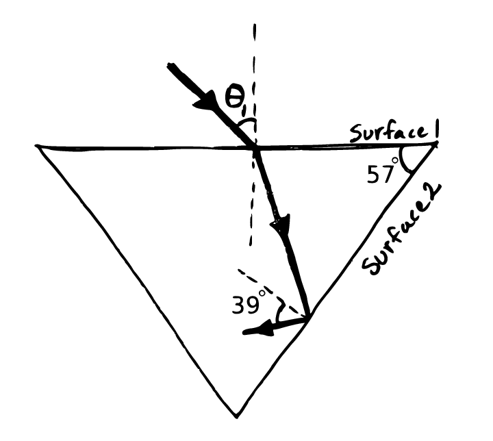
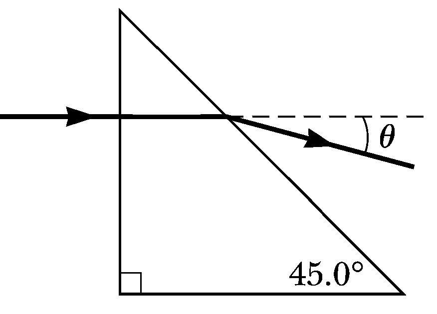
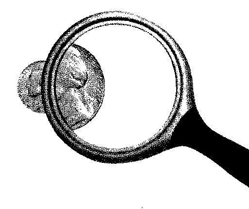
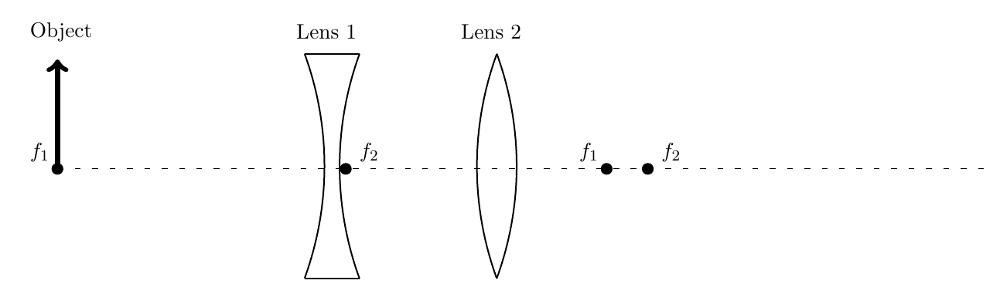

Phy112 Practice Exam 3
Problem 1
When a man stands near the edge of an empty drainage ditch of depth \(2.46~m\), he can barely see the boundary between the opposite wall and bottom of the ditch as shown in the below left figure. The distance from his eyes to the ground is \(1.63~m\)
- What is the horizontal distance \(d\) from the man to the edge of the drainage ditch if the angle \(\theta = 28^\circ\)?
- After the drainage ditch is filled with water (\(n = 1.333\)) as in the below right figure, what is the maximum distance the man can stand from the edge and still see the same boundary?

Problem 2
The light beam shown below strikes surface 2 at the critical angle. Determine the angle \(\theta\).

Problem 3
A laser beam strikes a \(45^\circ–45^\circ–90^\circ\) prism perpendicularly to one of its faces. The transmitted beam exiting the prism’s hypotenuse forms an angle \(\theta = 15.0^\circ\) relative to the incident beam direction. Determine the index of refraction of the prism.

Problem 4
The nickel’s image as seen through a magnifying glass has twice the diameter of the nickel when the lens is \(2.84\) cm from the nickel. Determine the focal length of the lens.

Problem 5
A diverging lens of focal length \(f_1 = -5.0~cm\) and a converging lens of focal length \(f_2 = 2.75~cm\) are placed \(3~cm\) apart from each other. An object of height \(2.0~cm\) is placed \(5.0~cm\) in front of the first lens.
- Find the distance between lens 2 and the final image.
- Find magnification of the two lens system.
- Use the below figure to draw the principal rays for both of these lenses (2 for the diverging lens and 3 for the converging lens). Please also show the intermediate image in your drawing.
